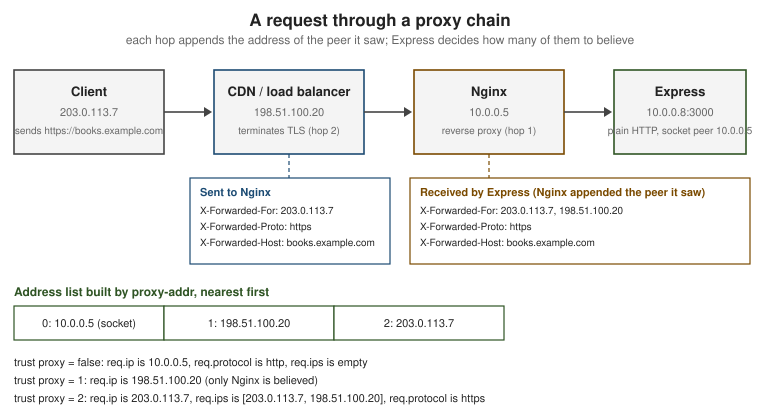

Behind Proxies
|
This content was generated with the assistance of AI and should be verified against the official documentation before being relied on in production. |
This page is written against Express 5.3 (npm express 5.3.0, published 2026-10-09) on Node.js 18 or later, the minimum
for Express 5, and it states where Express 4 (latest 4.22.3) behaves differently. Everything was checked against the
official documentation and the package repositories on 2026-10-29. In production an Express application almost never
faces the Internet directly: a reverse proxy such as Nginx, a cloud load balancer, a CDN or a Kubernetes ingress
terminates TLS, spreads the load and forwards plain HTTP to Node.js. From the application’s point of view every request
then comes from the proxy, over HTTP, addressed to an internal host name. The trust proxy setting tells Express when it
may believe the X-Forwarded-* headers that the proxy adds to recover the real client address, protocol and host. Get it
wrong in one direction and logs, rate limits and secure cookies break; get it wrong in the other and any client can forge
its own address. The examples use ESM and the node: prefix for built-in modules, belong to the Bookshelf API that
grows across this section, and contain placeholders only, never real secrets. The settings table is in
Application & Settings, the request properties in
Request, and the wider hardening checklist in
Security Best Practices.
Why Express needs to be told
Express derives several request properties from the TCP connection:
-
req.ipis the remote address of the socket. -
req.protocolishttpswhen the socket is encrypted andhttpotherwise. -
req.hostnamecomes from theHostheader.
Behind a proxy all three describe the proxy, not the client. The socket address is the proxy’s internal address, the
socket is plain HTTP because the proxy terminated TLS, and the Host header may have been rewritten to the name of the
internal upstream. The proxy usually passes the original values along in headers, but a header is only as trustworthy as
the machine that wrote it. An HTTP header sent by a browser, a script or an attacker looks exactly like one added by your
Nginx. Express therefore ignores the forwarding headers by default and uses them only for connections that come from a
proxy you declared as trusted.
The forwarding headers
No standard obliges a proxy to send anything, but three de facto headers are used by Nginx, HAProxy, Apache, Envoy, the cloud load balancers and ingress controllers. Express reads exactly these:
| Header | Meaning | Used by Express for |
|---|---|---|
|
A comma-separated list of addresses. Each proxy appends the address of the peer it received the request from, so the list reads client first, the most recent proxy last. The last proxy’s own address is not in the list: it is the socket address of the connection that reached Express. |
|
|
The protocol the client used with the first proxy, |
|
|
The |
|
Three more details avoid common confusion:
-
Node.js joins repeated header lines with a comma, so a request carrying two
X-Forwarded-Forlines is read as one list, in the order the lines were received. -
When
X-Forwarded-ProtoorX-Forwarded-Hostcontains several comma-separated values (several proxies each appended one), Express uses the first, the one closest to the client. A single leading value can still have been written by the client when the first proxy does not overwrite it. -
X-Forwarded-Port,X-Forwarded-Prefixand the standardForwardedheader (RFC 7239) are not interpreted by Express.proxy-addrreads onlyX-Forwarded-For. If a proxy emitsForwardedonly, translate it at the proxy (Nginx and HAProxy can do so) or read it in your own middleware.
A request through a proxy chain
The figure follows one request through a CDN and an Nginx reverse proxy to Express, with the headers each hop adds and
the result of three different trust proxy values.

proxy-addr builds the address list from the socket address followed by the X-Forwarded-For entries read from right
to left, so index 0 is always the machine that opened the connection to Express, index 1 the one before it, and so
on. Trust is then evaluated hop by hop from the application outwards. The first untrusted address ends the walk and is
reported as the client. When every address is trusted, the leftmost entry of the header wins, which is exactly why
trusting too much is dangerous.
The trust proxy setting
trust proxy is an application setting changed with app.set(), app.enable() or app.disable() before the first
request. Express compiles the value once, with proxy-addr, into a function (address, index) => boolean and stores it
as the internal setting trust proxy fn. The default is false: nothing is trusted. The setting accepts four kinds of
value:
| Value | Meaning | When to use |
|---|---|---|
|
No proxy is trusted. The forwarding headers are ignored. |
The application is reachable directly, with no proxy in front. |
|
Every hop is trusted: the client is the leftmost entry of |
Almost never in production. Only when it is certain that the application cannot be reached except through a proxy that overwrites the header, and even then a hop count is more precise. |
A number |
Trust the |
A fixed, known number of proxies, for example one Nginx, or a CDN plus a load balancer. The number must match the real chain and must be updated when a proxy is added. |
An IP address, a subnet, a list of them, or a preset name |
A string with comma-separated entries, or an array of strings. Each entry is an IPv4 or IPv6 address, a CIDR subnet
( |
The proxies have known, stable addresses or live in a known private network. This is the most robust choice. |
A function |
Called for each hop with the address and its distance from the application ( |
Dynamic or large address lists, for instance the published ranges of a CDN, or when a decision needs more than a prefix match. |
The preset names are shortcuts for ranges that private networks use:
| Name | Addresses |
|---|---|
|
|
|
|
|
|
An IPv4 address that the socket reports as an IPv4-mapped IPv6 address (::ffff:10.0.0.5) is matched against IPv4
entries as well, so a single 10.0.0.0/8 entry covers both representations. An unparsable value throws a TypeError at
the moment the setting is applied, so a typo fails at start-up rather than silently trusting nothing.
// trust-proxy-values.mjs
import { BlockList } from 'node:net';
import express from 'express';
const app = express();
// 1. Boolean. Trusts everything; avoid in production.
// app.set('trust proxy', true);
// 2. Hop count. Exactly one reverse proxy sits in front of the app.
// app.set('trust proxy', 1);
// 3. Presets, addresses and subnets, as a comma-separated string or an array.
// app.set('trust proxy', 'loopback, linklocal, uniquelocal');
// app.set('trust proxy', ['loopback', '10.0.1.0/24', 'fd00::/8']);
// 4. A function: here the proxies are the members of a block list, such as the ranges of a CDN.
const proxies = new BlockList();
proxies.addSubnet('10.0.0.0', 8, 'ipv4');
proxies.addAddress('203.0.113.10', 'ipv4');
app.set('trust proxy', (address, index) => {
const ipv4 = address.startsWith('::ffff:') ? address.slice('::ffff:'.length) : address;
return proxies.check(ipv4, 'ipv4');
});
// The compiled function is available for diagnostics.
console.log('trust proxy =', app.get('trust proxy'));
console.log('10.1.2.3 is trusted:', app.get('trust proxy fn')('10.1.2.3', 0));
app.get('/whoami', (req, res) => {
res.json({ ip: req.ip, ips: req.ips, protocol: req.protocol, hostname: req.hostname });
});
app.listen(3000, (error) => {
if (error) {
throw error;
}
});Source: Express: Behind proxies
Notes on the example. Only the last app.set() is active, the others are alternatives shown commented out. The call
app.enable('trust proxy') is the same as app.set('trust proxy', true), which is why it should read as a warning
when it appears in a code review. The function receives the address and the hop index, and proxy-addr calls it first with the socket peer
(index 0), then with each earlier entry of X-Forwarded-For. A function that returns true for every hop behaves
like true. The trusted ranges of a public CDN are published by the vendor and change, so such a function should load
them from configuration instead of hard-coding them.
Choosing a value
The goal is that req.ip is the address of the first machine that you do not control. Three questions decide the value:
-
How many proxies stand between the Internet and the application, in every deployment, including the developer laptop with no proxy at all?
-
Can a client reach Express without passing through them (a public port, a second ingress, another service in the cluster calling the pod directly)?
-
Do all of them overwrite or append to
X-Forwarded-For, or does the first one pass the client’s value through?
Practical rules:
-
When the proxies sit in a private network and nothing else in that network is untrusted,
'uniquelocal'(plus'loopback'for a sidecar) is simple and survives changes of the number of hops. It is wrong when the network also hosts untrusted workloads that can send requests straight to the application. -
A hop count is exact for a stable chain, and wrong the moment the chain changes. A count that is too small makes
req.ipthe address of a proxy, so one rate-limit bucket covers every user. A count that is too large makesreq.ipan attacker-controlled entry. -
A list of exact addresses or subnets is the most defensive form, because a request that arrives from any other address is treated as direct and its headers are ignored.
-
Use an environment variable so that development, tests and production can differ:
// config-trust-proxy.mjs
import express from 'express';
/** Turns the TRUST_PROXY environment value into something app.set() understands. */
export function parseTrustProxy(value) {
if (value === undefined || value === '' || value === 'false') {
return false;
}
if (value === 'true') {
return true;
}
if (/^\d+$/.test(value)) {
return Number(value);
}
return value; // addresses, subnets or presets, separated by commas
}
const app = express();
app.set('trust proxy', parseTrustProxy(process.env.TRUST_PROXY));
app.listen(3000, (error) => {
if (error) {
throw error;
}
});Source: Express: Behind proxies
Run it with TRUST_PROXY=1 node config-trust-proxy.mjs behind a single proxy, TRUST_PROXY=uniquelocal node ... inside a
private network, or without the variable on a laptop.
What changes in the request
The setting affects these properties. All of them behave the same in Express 4 and Express 5 unless stated.
| Property | Without trust | With trust |
|---|---|---|
|
The socket’s remote address. |
The first address from the right, in the chain described above, that is not trusted. If every hop is trusted, the
leftmost |
|
An empty array. |
The client and the intermediate proxies, client first. It does not include the socket address of the machine that
connected to Express. |
|
|
The first value of |
|
|
|
|
The |
The first value of |
|
The host without the port (an IPv6 literal keeps its brackets). |
The first |
|
Computed from |
The same computation over the forwarded host name. |
Two points are easy to miss. First, only the headers of the connection peer are gated by the trust function: for
X-Forwarded-Proto and X-Forwarded-Host, Express asks whether the socket peer (index 0) is trusted and does not
distinguish between hops. A hop count of 1 and a count of 5 therefore read the same protocol and host, and differ in
req.ip. Second, req.secure and req.protocol follow the first value of the header: a proxy that appends instead
of overwriting an inbound X-Forwarded-Proto lets a client choose the protocol Express sees. Make the first proxy
overwrite it.
// whoami.mjs
import express from 'express';
const app = express();
app.set('trust proxy', process.env.TRUST_PROXY ?? false);
app.get('/whoami', (req, res) => {
res.json({
ip: req.ip,
ips: req.ips,
protocol: req.protocol,
secure: req.secure,
host: req.host,
hostname: req.hostname,
subdomains: req.subdomains,
socketAddress: req.socket.remoteAddress,
});
});
app.listen(3000, (error) => {
if (error) {
throw error;
}
});Source: Express API: Request
Try it locally, pretending to be a proxy with curl:
# Terminal 1, no trust: the headers are ignored and req.ip is the loopback address.
node whoami.mjs
# Terminal 2:
curl -s -H 'X-Forwarded-For: 203.0.113.7' -H 'X-Forwarded-Proto: https' localhost:3000/whoami
# Stop the server, then restart it trusting the loopback peer, which now acts as the proxy.
TRUST_PROXY=loopback node whoami.mjs
# Terminal 2: the header is now believed.
curl -s -H 'X-Forwarded-For: 203.0.113.7' -H 'X-Forwarded-Proto: https' localhost:3000/whoami{
"ip": "203.0.113.7",
"ips": ["203.0.113.7"],
"protocol": "https",
"secure": true,
"host": "localhost:3000",
"hostname": "localhost",
"subdomains": [],
"socketAddress": "::1"
}The first request reports the loopback address (::1 or ::ffff:127.0.0.1), an empty ips and http. This is also the
quickest check of a deployed setup: expose a diagnostic route on an internal port, send a request through the full proxy
chain and compare ip and ips with what is expected.
Trusting too much: spoofing and rate-limit bypass
X-Forwarded-For is a request header, and a client can send any value in it. A proxy appends its observation to the
right of whatever the client wrote, which is why proxy-addr reads from the right and stops at the first untrusted
address. Consider a single Nginx that appends to the header, and a hostile client at 203.0.113.7 that sends
X-Forwarded-For: 1.2.3.4. Nginx forwards 1.2.3.4, 203.0.113.7 (it appended the real client address to the forged
one), so the list seen by Express is the Nginx address, 203.0.113.7, 1.2.3.4:
| Setting | req.ip |
Result |
|---|---|---|
|
The proxy’s address |
The forgery is ignored, but every user shares one address. |
|
|
Correct, because the single trusted hop reported what it really saw. |
|
|
The application believes a second proxy that does not exist, so the forged entry becomes the client. |
|
|
Every hop is trusted and the leftmost entry is taken: the client chooses its own address. |
The consequences of a forgeable req.ip are practical:
-
A rate limiter keyed on
req.ipcan be bypassed by sending a different header value in every request, and an attacker can lock out a victim by making the limiter see the victim’s address. -
IP allow lists and deny lists protecting an admin route can be defeated.
-
Audit and access logs record false addresses, which weakens incident response.
-
Geolocation and fraud scoring become unreliable.
express-rate-limit validates this configuration at runtime and logs an error when X-Forwarded-For is present while
trust proxy is false, and when trust proxy is true, for these reasons. Treat those messages as configuration
bugs, not noise. Direct access is the other half of the problem: when the application port is reachable without the
proxy, a client sends the forged header straight to Express, and any setting that trusts the client’s own address
(true, or a count larger than the real chain) believes it. Bind to a private interface, restrict the security group or
network policy so that only the proxy can connect, and prefer an address list so that stray direct connections are
treated as untrusted.
The hardening at the proxy is as important as the setting in Express. The first proxy (the one facing the Internet)
should discard what the client sent in X-Forwarded-For, X-Forwarded-Proto and X-Forwarded-Host and write its own
values; inner proxies should append.
The 2026 proxy-addr fix
Express delegates all address parsing and trust evaluation to the jshttp proxy-addr package. Its release 2.0.8 fixes a
vulnerability published as CVE-2026-90711 (GitHub advisory GHSA-jqcg-44mw-7w3h), and Express 5.3.0 raised its dependency
range to ^2.0.8. Applications that depend on trust proxy for security decisions should:
-
Update to a current Express release (5.3.x or 4.22.x or later) and confirm the resolved version with
npm ls proxy-addr; a lockfile can keep an older copy even after Express is updated. -
Read the advisory text for the exact conditions, since this page does not repeat the details.
-
Re-test the
trust proxyconfiguration with spoofed headers after upgrading, using the diagnostic route above or an automated test.
npm ls proxy-addr
npm audit
npm update proxy-addrSource: jshttp/proxy-addr
Secure cookies and HTTPS redirects
The most frequent symptom of a missing trust proxy is a session that never sticks. express-session refuses to send a
cookie marked secure: true over a connection that Express considers insecure. Behind a TLS-terminating proxy without
trust proxy, req.protocol is http, the Set-Cookie header is never produced and users cannot log in, although
nothing is logged. The fix is to trust the proxy so that req.secure becomes true. The same property drives a
redirect from HTTP to HTTPS done in the application instead of at the proxy:
// secure-session.mjs
import express from 'express';
import session from 'express-session';
const app = express();
// One reverse proxy terminates TLS in front of the application.
app.set('trust proxy', 1);
app.use((req, res, next) => {
if (process.env.NODE_ENV === 'production' && !req.secure) {
return res.redirect(308, `https://${req.hostname}${req.originalUrl}`);
}
next();
});
app.use(
session({
name: 'bookshelf.sid',
secret: process.env.SESSION_SECRET, // read from the environment; never commit a value
resave: false,
saveUninitialized: false,
cookie: { secure: true, httpOnly: true, sameSite: 'lax', maxAge: 60 * 60 * 1000 },
}),
);
app.get('/', (req, res) => {
req.session.views = (req.session.views ?? 0) + 1;
res.json({ views: req.session.views, secure: req.secure });
});
app.listen(3000, (error) => {
if (error) {
throw error;
}
});Source: Express middleware: session
Run it with node --env-file=.env secure-session.mjs, where .env defines SESSION_SECRET with a value generated by
the command node -p crypto.randomBytes(32).toString('hex'). express-session also has its own proxy option for deciding
whether to trust X-Forwarded-Proto; when it is left undefined the middleware follows the application’s trust proxy
setting, which is the behaviour to keep. A redirect built from req.hostname rather than the Host header avoids copying
a port, but the host name still comes from the client, so a production deployment should redirect to a configured
canonical origin. The full session setup is in Cookies & Sessions.
Typical setups
The values below are starting points. The behaviour of a proxy depends on its configuration and version, so verify the real chain with the diagnostic route.
| Setup | Typical trust proxy |
Remarks |
|---|---|---|
Nginx on the same host |
|
Nginx must set the headers (see the example below). The socket peer is |
Nginx in a container network, or a Docker Compose service |
|
The peer is the bridge-network address of the Nginx container. |
Cloud load balancer (AWS ALB, Google Cloud HTTP(S) load balancer, Azure Application Gateway) |
|
The balancer appends the client address to |
CDN in front of a load balancer in front of Express |
|
The count must include every proxy that appends to |
Heroku |
|
The Heroku router sits in front of the dyno and appends the client address. The Heroku free dynos that older tutorials used no longer exist, but paid dynos still need the setting. |
Kubernetes ingress controller |
|
Whether the controller forwards or replaces an inbound |
Platform-as-a-service (Cloud Run, Render, Fly.io, Railway) |
|
The platform proxy terminates TLS. Read the vendor’s headers page. |
Local development, no proxy |
|
Do not copy the production value into development. |
A minimal Nginx server block in front of Express, which overwrites what the client sent:
server {
listen 443 ssl;
http2 on;
server_name books.example.com;
ssl_certificate /etc/ssl/books.example.com/fullchain.pem;
ssl_certificate_key /etc/ssl/books.example.com/privkey.pem;
location / {
proxy_pass http://127.0.0.1:3000;
proxy_http_version 1.1;
# The first proxy overwrites what the client sent.
proxy_set_header X-Forwarded-For $remote_addr;
proxy_set_header X-Forwarded-Proto $scheme;
proxy_set_header X-Forwarded-Host $host;
proxy_set_header Host $host;
}
}Because $remote_addr replaces the header, this Nginx is the first proxy and trust proxy should be 1 (or
'loopback'). Behind another proxy that already added a legitimate chain, use $proxy_add_x_forwarded_for instead, which
appends $remote_addr to the incoming value. The proxy_set_header directive replaces any header the client sent with
the same name, so it is the place where a spoofed X-Forwarded-Proto is discarded. The reverse is also worth checking:
Nginx does not pass headers whose value is empty, and a directive missing from a nested location can silently reset the
inherited ones, because proxy_set_header is inherited only when the block defines none of its own.
Testing the configuration
A request test proves that spoofed headers are rejected. Use supertest and node:test against the exported application
without listening (see Testing):
// trust-proxy.test.mjs
import assert from 'node:assert/strict';
import { test } from 'node:test';
import express from 'express';
import request from 'supertest';
function createApp(trustProxy) {
const app = express();
app.set('trust proxy', trustProxy);
app.get('/ip', (req, res) => {
res.json({ ip: req.ip, ips: req.ips, protocol: req.protocol });
});
return app;
}
test('ignores forwarding headers when no proxy is trusted', async () => {
const response = await request(createApp(false))
.get('/ip')
.set('X-Forwarded-For', '1.2.3.4')
.set('X-Forwarded-Proto', 'https');
assert.notEqual(response.body.ip, '1.2.3.4');
assert.deepEqual(response.body.ips, []);
assert.equal(response.body.protocol, 'http');
});
test('one trusted hop reads the rightmost forwarded address only', async () => {
const response = await request(createApp('loopback'))
.get('/ip')
.set('X-Forwarded-For', '1.2.3.4, 203.0.113.7');
assert.equal(response.body.ip, '203.0.113.7');
});
test('trusting everything lets the client choose its address', async () => {
const response = await request(createApp(true)).get('/ip').set('X-Forwarded-For', '1.2.3.4, 203.0.113.7');
assert.equal(response.body.ip, '1.2.3.4'); // the reason not to use true
});Source: ladjs/supertest
Install with npm install --save-dev supertest and run node --test. The second test shows the key property: with a
trusted loopback peer, 1.2.3.4 stays an unverified claim, and the address that the (simulated) proxy observed wins.
What changed recently
| Version | Change relevant to proxies |
|---|---|
Express 5.0.0 (2024-09) |
|
|
Reads the peer from |
|
Fixes CVE-2026-90711; Express 5.3.0 requires |
Express 4.22.x |
Maintenance and security releases. Behaviour of the settings is the same as in earlier 4.x releases. The command
|
Where the books are outdated
The four books consulted for this section target Express 4.0 to 4.18 and Node.js 0.10 to 20. The deployment chapters that put a session-based application on a platform proxy are the ones affected:
| Older practice | Where it appears | Current behaviour |
|---|---|---|
Sessions with a secure cookie deployed on Heroku, with no |
Deployment chapters of the books |
The cookie is never set, because the application sees |
|
Community deployment tutorials |
Trusts every hop and lets clients forge |
Reading |
Older middleware and tutorials |
Use |
Heroku free dynos, mLab and other hosts as the deployment target. |
All four books |
These services no longer exist in that form. The setups above apply to current platforms, and the chain length must be re-measured for each one. |
No mention of rate limiting or logging of the client address. |
All four books |
Rate limiting, logging and allow lists all depend on a correct |
Common pitfalls
| Symptom | Usual cause | Fix |
|---|---|---|
Every user has the same IP in logs and the rate limiter. |
|
Set the count or list that matches the proxies and test through the real chain. |
Users can choose their own IP. |
|
Use a list or exact count, close direct access, and make the first proxy overwrite |
Login works locally but the session cookie is missing in production. |
|
Set |
Infinite redirect loop from an HTTP to HTTPS middleware. |
The application sees |
Trust the proxy and forward the header; or do the redirect at the proxy. |
|
The proxy does not forward |
Send |
|
The socket is IPv6 dual-stack and reports an IPv4-mapped address. |
Normalise it when storing or comparing addresses (remove the |
The value is right on a laptop and wrong in the cluster. |
The number of hops differs between environments. |
Read the setting from an environment variable and verify each environment with a diagnostic route. |
|
Source NAT replaced the client address before it reached the ingress. |
Preserve the client address at the load balancer or service level, or use the proxy’s headers; then verify the chain. |
A custom function trusts too much. |
It ignores the index or matches a broad prefix. |
Return |
References
-
Express API: Application, app.set and the trust proxy setting
-
Express API: Request, req.ip, req.ips, req.protocol, req.hostname
-
Publisher pages of the consulted books are listed in the section bibliography.
-
Related pages: Application & Settings, Request, Security Best Practices, Cookies & Sessions, Health Checks & Graceful Shutdown